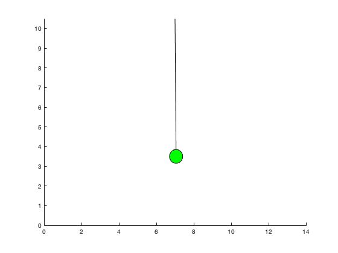

% Tyler Matthews % Pendulum Simulation / Animation clc; close all; clear all; startTime = 0; stopTime = 5; steps = 1000; t = linspace(startTime,stopTime,steps); T = stopTime/steps; %Initialize theta = zeros(1, steps); %theta omega = zeros(1, steps); %omega = dtheta/dt theta(1) = pi/4; % starting position (degrees) omega(1) = 0; % starting velocity (degress / second) b = 1; % damping factor (g/s) m = 3; % mass (kg) g = 9.8; % gravitational constant (m/ms^2) l = 7; % pendulum length (meters) xStartPoint = l; % Sets the x anchored point of the pendulum yStartPoint = 1.5*l; % Sets the y anchored point of the pendulum %inital plot x_pos = l*sin(theta(1)); y_pos = l*cos(theta(1)); %Array to trace the pendulum posArr = [zeros(1, length(t)); zeros(1, length(t))]; posArr(1,1) = x_pos; posArr(1,2) = y_pos; index = 1; %{ Single pendulum without damping: theta'' = -g/l*sin(theta) Single pendulum with damping: theta'' = -b/m*theta' + -g/l*sin(theta) %} % pendulum without damping usign degrees instead of radians %{ for k=2:steps %Runge Kutta Method x11 = T *omega(k-1); x21 = T *(-g/l)*(sind(theta(k-1))); x12 = T *(omega(k-1) + 0.5*x21); x22 = T *(-g/l)*(sind(theta(k-1) + 0.5*x11)); x13 = T *(omega(k-1) + 0.5*x22); x23 = T *(-g/l)*(sind(theta(k-1) + 0.5*x12)); x14 = T *(omega(k-1) + x23); x24 = T *(-g/l)*(sind(theta(k-1) + x13)); theta(k) = theta(k-1) + x11 + 2*x12 + 2*x13 + x14; omega(k) = omega(k-1) + x21 + 2*x22 + 2*x23 + x24; % PLOTTING x_pos = l*sind(theta(k)); y_pos = l*cosd(theta(k)); %plot([x1, x2], [y1, y2]) plot([5, 5 - x_pos],[10, 10 - y_pos]); xlim([0,10]); ylim([0,10]); % ANIMATE if(mod(k,10) == 0) pause(0.01) disp(k) end end %} figure; %single pedulum with damping for k=2:steps %Runge Kutta Method thetaOmega = rkCalculator(theta, omega, T, g, l, k, b, m); theta(k) = thetaOmega(1); omega(k) = thetaOmega(2); % PLOTTING % Current Position x_pos = l*sin(theta(k)); y_pos = l*cos(theta(k)); % Adding to tracing array posArr(1, index) = x_pos; posArr(2, index) = y_pos; if(index >= length(posArr)) index = 1; else index = index + 1; end clf; hold on if(k*T<=1) plot(xStartPoint - posArr(1,1:k), yStartPoint - posArr(2,1:k)) else plot(xStartPoint - posArr(1,k-(1/T):k), yStartPoint - posArr(2,k-(1/T):k)) end plot([xStartPoint, xStartPoint - x_pos],[yStartPoint, yStartPoint - y_pos], 'black'); th = 0:pi/50:2*pi; circleX = l/20 * cos(th) + xStartPoint-x_pos; circleY = l/20 * sin(th) + yStartPoint-y_pos; plot(circleX, circleY, 'b'); fill(circleX, circleY, 'g'); colormap(summer); hold off xlim([0,xStartPoint*2]); ylim([0,yStartPoint]); % ANIMATE if(mod(k,1) == 0) pause(0.01) %disp(k) end end